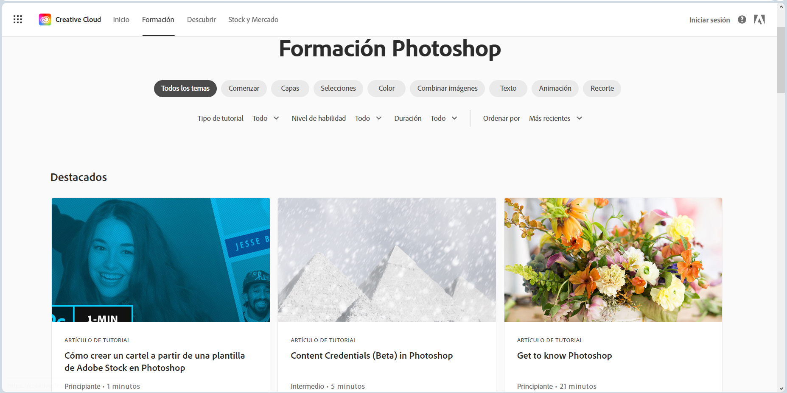

Photoshop es una destacada aplicación de edición de imágenes desarrollada por Adobe. Ofrece una amplia gama de herramientas
y funciones que permiten a los usuarios manipular y retocar imágenes de manera creativa y profesional. Estas herramientas
incluyen capas, selecciones, filtros, efectos, herramientas de texto, y muchas otras opciones que son fundamentales para
la edición de fotos, diseño gráfico y composición visual. Photoshop se utiliza ampliamente en la industria de la fotografía,
diseño gráfico, publicidad y producción multimedia.
Algunas de sus principales funciones son:
Edición no destructiva: Permite realizar cambios en las imágenes sin dañar la calidad original de la foto, lo que facilita la corrección de errores.
Capas: Permite trabajar en diferentes elementos de una imagen en capas separadas, lo que facilita la edición y la composición de elementos.
Herramientas de selección: Proporciona una variedad de herramientas de selección, como la varita mágica y la pluma, para seleccionar áreas específicas de una imagen.
Herramientas de retoque y corrección: Incluye herramientas como el pincel corrector, el parche y el tampón de clonar para retocar imperfecciones, eliminar objetos no deseados y suavizar la piel.
Filtros y efectos: Ofrece una amplia gama de filtros y efectos para transformar el aspecto de una imagen, desde efectos artísticos hasta correcciones de color.
Ajuste de color y tono: Permite modificar la saturación, el contraste, el equilibrio de blancos y otros aspectos del color y el tono de una imagen.
Texto y tipografía: Facilita la creación y edición de texto en imágenes, con opciones de formato avanzadas y efectos de texto.
Trabajo en 3D: Ofrece herramientas para trabajar con imágenes y objetos 3D, incluida la posibilidad de crear, editar y renderizar modelos 3D.
Herramientas de dibujo y pintura: Incluye pinceles y herramientas de dibujo avanzadas para crear ilustraciones y pinturas digitales.
Automatización y scripts: Permite crear acciones personalizadas para automatizar tareas repetitivas y utiliza scripts para personalizar el funcionamiento de Photoshop.
Integración con otras aplicaciones de Adobe: Photoshop se integra fácilmente con otras aplicaciones de Adobe Creative Cloud, como Illustrator e InDesign, para un flujo de trabajo sin problemas.
Sincronización en la nube: Permite almacenar y sincronizar proyectos en la nube, lo que facilita el acceso a tus trabajos desde cualquier lugar.
Adobe en su página web cuenta con su propia sección de aprendizaje, donde se pueden encontrar tutoriales para distintos niveles de conocimientos en la plataforma.
